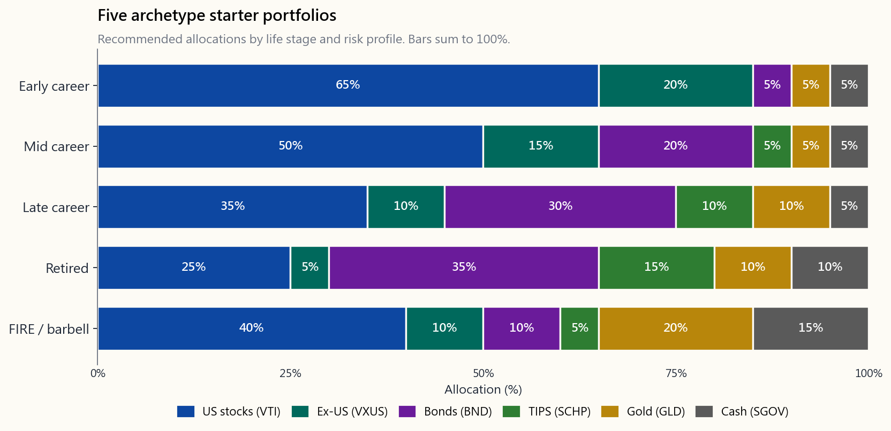
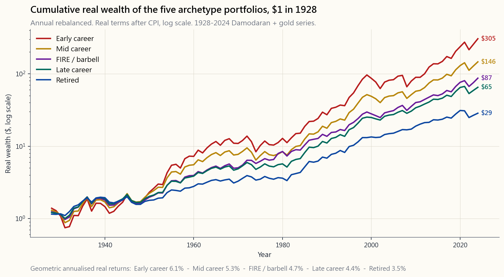

Week 12: Building Your First Real Portfolio — Putting Weeks 1-11 Together
1. Why This Is Important
Eleven weeks in. You have read about why we invest, what an index fund is, what risk really means, why 60/40 was the default for forty years, how diversification works as correlation arithmetic, why valuation matters, why fees compound against you, and how your own behaviour is the largest unforced error on the table. Now you build the thing.
This is the L1 capstone. By the end of this week, *if you have the cash to deploy*, you should have an actual portfolio in an actual brokerage account holding actual ETFs in roughly the proportions you chose on purpose, with automatic contributions scheduled monthly and the next rebalance on the calendar. Not a plan, not a spreadsheet — a portfolio.
The reason this lesson sits at Week 12 and not Week 2 is the same reason a pilot does ground school before the cockpit. Choosing an allocation is a one-paragraph decision. Choosing it *for the right reasons*, on a horizon you can actually hold, in an account whose tax treatment you understand, with instruments whose costs you have checked — that is the eleven weeks of context.
compound for years before you touch it again. A 1% lower expense ratio over thirty years is roughly 25% more terminal wealth. A 3-percentage-point higher equity weight, held faithfully through one cycle, is roughly the same. Small choices, made once, dominate.
year.** The blow-ups are concentrated at the start: oversized positions, wrong account type, unclear time horizon, panic-selling the first 10% drawdown. Get the first month right and the rest is patience.
everyone.** A two-fund or three-fund portfolio held for thirty years outperforms the median professional manager net of fees and taxes. You do not need clever; you need durable.
monthly contributions matter more than the exact starting weights. The contribution schedule is the engine; the allocation is just the shape of the wheels.
This lesson covers account-type selection, the five archetype portfolios, the specific ETFs that implement each, the mechanics of the first deposit, the monitoring cadence, and a brief preview of where L2 takes you next.
2. What You Need to Know
2.1 The Six-Step Build, in One Page
Every portfolio decision sits in one of six buckets, in order:
it? Money you need in three years should not be in stocks. Money you need in thirty years should mostly be in stocks. The horizon sets the equity ceiling.
without changing your life) and willingness (what you can sleep through). Use the lower of the two — a portfolio you cannot hold through a 30% drawdown is worse than one you can.
account choice can add 1–2% to net return per year for a typical working-age investor. We cover this in §2.2.
bonds, gold, and cash. Choose an archetype from §2.3 or build your own from the same components.
allocation. We give a concrete recommended list in §2.4.
schedule, rebalance frequency, monitoring rhythm. §2.5 and §2.6.
You can finish the full sequence in an afternoon. Most people stall on step 1 — defining the goal — because it forces them to decide what they want their life to look like in twenty years. The portfolio is downstream of that decision; it cannot be made for you.
2.2 Account Type — The Largest Single-Decision Tax Lever
For a US retail investor, the account type matters more than any single ETF choice. The wrong account on the right ETFs leaves double-digit basis points of return on the table every year for decades. The right hierarchy:
return on the matched dollars. Nothing else in this lesson comes close to that arithmetic. Take the match before you do anything else.
tax-advantaged: deductible going in, growth tax-free, withdrawals for medical expenses tax-free. Treat it as a stealth retirement account once you have the contribution maxed and a separate cash reserve for current medical bills.
the backdoor Roth.** Tax-free growth, tax-free withdrawals after 59½, no required minimum distributions, contributions accessible anytime without penalty. Roth is the cleanest long-horizon compounding vehicle in the US tax code.
taxable income; Roth 401(k) takes the tax now. The choice depends on whether you expect your retirement marginal rate to be higher or lower than today's.
amount, any time, but every dividend and every realised gain is taxed in the year it occurs. This is where the tax-efficiency principle lives — the largest unspoken fee on a successful retail book is capital gains tax, and the taxable account is where you have to manage it actively (tax-loss harvesting, lot selection, options-and-margin exposure shifting). Most readers building their first portfolio should get the tax-advantaged buckets right first and worry about the taxable account once those are full.
Asset location — which assets sit in which account — is its own sub-game. The crude rule: bonds and high-dividend payers go in tax-advantaged accounts (because their income is taxed at ordinary rates and they generate constant taxable distributions); broad-market equity ETFs are tax-efficient enough to live happily in the taxable account (low turnover, qualified dividends). For a beginner, do not optimise asset location until each account is at least partially funded. Get the contributions in first.
2.3 Five Archetype Portfolios
Below are five starter portfolios indexed by life stage and risk profile. Each is a defensible default, not an optimum — the optimum depends on details no one-size-fits-all table can hold.
| Archetype | Stocks (US / ex-US) | Bonds (intermediate) | TIPS | Gold | Cash | Profile |
|---|---|---|---|---|---|---|
| Early career (20s–early 30s) | 65% / 20% | 5% | 0% | 5% | 5% | Aggressive 85/10/5; horizon long; recovery time ample. |
| Mid career (mid 30s–40s) | 50% / 15% | 20% | 5% | 5% | 5% | Moderate 65/30/5; the textbook 60/40 with gold and TIPS sleeves. |
| Late career (50s–early 60s) | 35% / 10% | 30% | 10% | 10% | 5% | Conservative 45/45/10; sequence-of-returns risk dominates. |
| Retired (60s+ drawing income) | 25% / 5% | 35% | 15% | 10% | 10% | Conservative 30/60/10; protect the floor, accept smaller upside. |
| FIRE / barbell-curious | 40% / 10% | 10% | 5% | 20% | 15% | Cash-heavy, gold-heavy, equity-light. The structurally-mediocre middle is removed. |
The image below shows the same five rows as a stacked bar chart so the relative weights are visible at a glance.

A few notes on the choices.
- The early-career row is 85% equity, not 100%. The 5% gold and
- The bonds + TIPS split appears starting at mid career. TIPS
- The gold sleeve is small but persistent across every
- The FIRE / barbell row is the closest to the full barbell shape:
2.4 Specific ETFs — The Cheapest Concrete Implementation
The recommended-instrument list, US-listed only, all expense-ratios checked April 2026:
| Sleeve | Primary ETF | Alt | Expense ratio |
|---|---|---|---|
| US total market | VTI (Vanguard Total Stock Market) | VOO, SPY | 0.03% |
| US large-cap dividend | SCHD (Schwab US Dividend) | VYM | 0.06% |
| Ex-US developed + emerging | VXUS (Vanguard Total Intl) | IXUS | 0.07% |
| Intermediate bonds | BND (Vanguard Total Bond) | AGG | 0.03% |
| Global aggregate bonds | BNDW (Vanguard Total World Bond) | — | 0.05% |
| TIPS | SCHP (Schwab US TIPS) | VTIP, TIP | 0.03% |
| Gold | GLD (SPDR Gold) or IAU | GLDM | 0.40% / 0.25% |
| Cash | SGOV (iShares 0–3 Mo Treasury) | BIL | 0.07% |
The four-fund standard portfolio is VTI + VXUS + BND + GLD, in the proportions of whichever archetype row you chose. The three-fund standard portfolio drops gold and runs VTI + VXUS + BND. Either is a complete, defensible, decades-durable portfolio, in three or four trades.
You do not need more tickers than this. The professional industry sells complexity because complexity is what the customer can be charged for; the actual return contribution of holding 12 ETFs instead of 4 is, after fees and behavioural drift, slightly negative.
2.5 Dollar-Cost Averaging the First Deposit
You have $50,000 in cash to deploy and an allocation in mind. Do you buy everything tomorrow, or spread the buying across the next 12 months?
The honest answer is: **for a long-horizon portfolio, lump-sum on day one beats DCA on average about two-thirds of the time** — because markets go up most of the time and being out costs you opportunity. Every academic study going back to Constantinides (1979) reaches the same conclusion: in expectation, lump-sum wins.
But "in expectation" is not how humans hold portfolios through their first drawdown. The dollar-cost-averaging plan — equal-sized purchases monthly across 6 to 12 months — is *behaviourally robust*. It guarantees you do not put 100% of your starting cash into the highest day of the year. It guarantees that the first time the market falls 5%, your next purchase is at the lower price, which trains exactly the reflex you need to survive Week 30 of the lesson plan. The expected-return cost is small (50–100 basis points on the deployed amount over the first year). The behavioural value is large.
The recommended pattern for the first portfolio:
target weights. Open the account, place the first trades, set up the monthly auto-contribution.
on the first market day of the month, distributed across sleeves that are below target weight.
full target weight; new money flows in by auto-debit.
By month 7, the entire starting cash is invested, and the contribution habit is wired. From there, you do not look at the account again until the first quarterly check-in.
2.6 Monitoring Cadence — Quarterly Is Plenty
The cadence that works:
- Quarterly: glance at the account. Confirm contributions are
- Annually: rebalance. Bring every sleeve back to target by
- Life event: review the allocation when something material
The interactive panel below lets you build a portfolio from four sliders (US stocks, ex-US stocks, bonds, gold) plus a read-only remainder for cash, then simulates the cumulative real wealth from 1928 through 2024 on the same Damodaran-plus-gold dataset used throughout the course. It also reports geometric annualised real return, maximum drawdown, and Sharpe ratio, and lets you snap to any of the five archetype rows above with one click. Move the sliders. Watch what changes when you push gold from 5% to 20%. Watch what happens to the 1973–74 drawdown.
The image below shows the cumulative real wealth path for each of the five archetype portfolios on the same 1928–2024 dataset, so the order of the rows and their drawdown shapes are visible without moving any sliders.

The order of the lines from highest terminal wealth to lowest is roughly: early career, mid career, FIRE, late career, retired. The shape tells the story the terminal value cannot — early career makes you most money over a century, but it also asks you to hold through a -55% drawdown in 1932 and a -49% drawdown in 2008. The retired row never goes below -25%. Pick the line whose troughs you can sleep through.
2.7 Where L2 Takes You
L2 (weeks 26 onward) extends the L1 base in three directions:
- Factor sleeves (Weeks 23, 26): replacing pieces of the
- Tax management (Weeks 31, 35): tax-loss harvesting,
- Risk overlays (Weeks 47, 50): a small long-volatility or
None of these are required to make the L1 portfolio work. They are the tuning; this lesson is the engine. Get the engine running this month, then come back for the tuning when L2 starts.
3. Common Misconceptions
Misconception 1: "I should wait until I have more money before starting."
The most expensive mistake in personal finance. Compounding rewards time in, not amount at start. $200 a month from age 22 beats $1,000 a month from age 35 to a comfortable retirement. Start with whatever amount lets you place a single trade. Increase from there.
Misconception 2: "International stocks have underperformed for 15 years, so I should skip VXUS."
The 2010–2024 US-outperformance gap is the largest in 50 years and is itself the strongest reason to keep some VXUS. The previous 15-year cycle (1985–2000) had Japan and Europe outperforming the US by similar margins. Mean reversion is not a guarantee, but a single-country book is a single bet, and the course's investable-universe rule says the *best companies are US-listed — not that the index* is the only one worth owning. Keep 10–25% in ex-US.
Misconception 3: "I can pick a 'better' allocation by backtesting."
Backtests are descriptive, not prescriptive. The allocation that won the last 30 years is not necessarily the allocation that wins the next 30 — the regime that produced the winning backtest may not repeat. Choose your allocation on horizon, capacity, and willingness; verify the historical drawdowns are tolerable; do not chase the highest-Sharpe row of the backtest.
Misconception 4: "I should hold individual stocks instead of ETFs in my first portfolio."
The first portfolio should be the boring index version. Individual names introduce idiosyncratic risk, tax-loss complications, and attention demands you do not need in week one. Once the index core is running for 12 months and you have lived through one quarterly check, then you can layer individual conviction names on top.
Misconception 5: "Gold is a speculation, not an investment."
Gold has compounded at roughly the rate of inflation across centuries and has real positive returns in inflation shocks where stocks and bonds both fall. It pays no yield and that is its honest cost. Every store of value rests on belief, and gold's belief has been the most durable across the longest history. A 5–10% sleeve is defensible insurance, not a gamble.
Misconception 6: "I should rebalance whenever the market moves a lot."
Rebalancing on volatility instead of on a calendar invites bad decisions. The annual rebalance captures most of the rebalancing premium with the least transaction cost and tax friction. More frequent rebalancing trades against the same return mean-reversion in the wrong direction. Quarterly check, annual rebalance.
Misconception 7: "Lump-sum invest the whole amount on day one is always better."
In expectation, yes. Behaviourally, often no. The DCA-over-six-months plan costs you about 50–100 bp of expected return on the deployed amount and buys you a much smaller probability of starting your investing life with a -20% loss. For most beginners, that trade is worth it. For experienced investors with a known horizon and a clear view that the entry isn't at a regime extreme, lump-sum.
Misconception 8: "More ETFs equals more diversification."
Past four to six ETFs, the marginal diversification is microscopic and the marginal complexity is not. Six VTI-like total-market funds is one VTI dressed up as a portfolio. Diversification is across asset classes (stocks, bonds, gold, cash) and within each class across risk premia (size, value, geography), not across redundant products with different tickers.
4. Q&A
Q1: How much money do I need to start?
A: Enough to buy one share of each ETF in your chosen archetype. With fractional-share brokerages, that floor is roughly $1. With whole-share brokerages, roughly $1,000 covers a four-fund portfolio. The amount that matters is the monthly contribution, not the starting balance.
Q2: Should I do Roth or Traditional 401(k)?
A: If you are early career and expect higher income later, Roth. If you are mid-to-late career at a high marginal rate today and expect a lower retirement bracket, Traditional. If unsure, a 50/50 split is a hedge across both regimes. Tax brackets change; do not optimise to the last basis point.
Q3: What if my employer 401(k) only offers expensive funds?
A: Take the employer match anyway — the match outweighs a 1% expense ratio for most match levels. Above the match, route additional savings to the Roth IRA (where you choose the ETFs). Once you leave that employer, roll the 401(k) into an IRA at a low-cost custodian.
Q4: VOO or VTI?
A: VTI holds about 4,000 US-listed companies including small and mid caps. VOO holds the S&P 500's roughly 500 large caps. The long-run return difference is well under 1% per year either direction; the correlations are above 0.99. Pick one, keep it for life. VTI is slightly more diversified; VOO is slightly more tax-efficient on account of lower turnover. Either works.
Q5: Should I buy bonds at all if I'm in my 20s?
A: A small allocation (5–10%) buys you behavioural insurance through the first equity drawdown without materially capping long-run return. Strict 100/0 is defensible if you genuinely have the temperament for it; most investors who say they have that temperament discover otherwise the first time -30% prints on the screen. The early-career archetype's 5% bond + 5% TIPS is small enough that it doesn't slow the compound and large enough that the rebalancing trade has something to bite on.
Q6: How does this lesson interact with the "barbell" shape?
A: The five archetypes in §2.3 are the L1 cap-weighted starting positions. The barbell shape is the advanced shape that you migrate toward once you have internalised the regime-change thesis and built the options-and-margin toolkit. The FIRE / barbell-curious row in §2.3 is the bridge: more cash, more gold, less middle-of-the-road bonds, but still a cap-weighted equity sleeve. Do not skip the apprenticeship to copy the shape.
Q7: What about crypto?
A: Out of scope for the L1 first portfolio. The store-of-value frame puts bitcoin in the same family as gold; the difference is bitcoin's belief is 15 years old, not 5,000. If you want a crypto sleeve, treat it as a slice of the gold weight, not a sleeve of its own, and cap total digital + gold at 15% combined. Most readers should run zero crypto in the L1 portfolio.
Q8: My portfolio is small — does fee minimisation really matter?
A: Yes. A 1% fee differential on a $10,000 portfolio is $100 a year today, but the same 1% is $10,000 a year on the $1M portfolio that $10,000 will become. The ETFs we list above are 0.03–0.40%. There is no reason to ever pay more than that for a passive sleeve.
Q9: How do I rebalance in a tax-advantaged account vs taxable?
A: In tax-advantaged accounts, sell-to-rebalance freely — there is no tax consequence. In taxable accounts, rebalance with new contributions where possible (steer the next month's auto-debit into the under-weight sleeve), and only sell to rebalance once a year as clean-up, preferring lots with the lowest unrealised gain.
Q10: When do I know I'm "done" building the first portfolio?
A: When all of the following are true: (1) the account is open and funded, (2) the target allocation is held to within 5 percentage points per sleeve, (3) the monthly auto-contribution is set up and running, (4) the next quarterly check is on the calendar, and (5) you have deleted the brokerage app from your phone or moved it to a folder you don't open daily. The last one matters more than people expect — it is what protects the portfolio from the daily-news cycle the irrationality principle warns about.
Q11: What's a realistic expected return for a balanced first portfolio?
A: For a moderate (mid-career) archetype on the 1928–2024 historical dataset, roughly 5.0–5.5% per year real (after CPI), with a worst-case calendar-year drawdown around -30%. Plan for the drawdown; the return takes care of itself if you hold.
Q12: How does this connect to the rest of the course?
A: This is the L1 capstone. Weeks 13–25 (L2) layer factor tilts, tax management, and asset-location optimisation onto this base. Weeks 26–39 introduce the options toolkit for exposure management without realising gains. Weeks 40–52 cover the volatility-as-asset-class and trend-following overlays that complete the Dragon-inspired shape. Every later allocation discussion compares back to the archetypes in this lesson.
第12週：建立你的第一個真實投資組合——整合第1至11週所學
1. 為何這一課至關重要
十一週了。你已讀過我們為何投資、什麼是指數基金、風險的真正含義、為何60/40配置主導了四十年、分散投資如何以相關性數學運作、為何估值重要、為何費用會複利侵蝕你的回報，以及你自身的行為如何成為最大的非受迫性失誤。現在，是時候真正建立投資組合了。
這是L1的期末總結。本週結束後，如果你有資金可部署，你應該在真實的經紀帳戶中持有真實的交易所買賣基金，比例大致按你審慎選擇的方案分配，每月自動供款已設定，下一次再平衡的日期已記入行事曆。這不是一份計劃，不是一張試算表——而是一個真實的投資組合。
這一課安排在第12週而非第2週，原因如同飛行員要先完成地面學校培訓才能進入駕駛艙。選擇資產配置只是一段話的決定；但以正確的理由作出選擇，在你真正能長期持有的時間軸上，在你了解稅務處理的帳戶內，以你已核查成本的工具——這需要十一週的背景知識。
本課涵蓋帳戶類型選擇、五種典型投資組合、具體實施每種方案的交易所買賣基金、首次入金的操作流程、監察節奏，以及L2下一步方向的簡要預覽。
2. 你需要掌握的內容
2.1 六步建立流程，一頁搞掂
每一個投資組合決策都屬於以下六個範疇之一，依序處理：
整個流程可在一個下午完成。大多數人卡在第一步——釐清目標——因為這迫使他們決定二十年後的生活面貌。投資組合是這個決定的下游；這個問題沒有人能替你作答。
2.2 帳戶類型——最重要的稅務槓桿單一決策
對於美國散戶而言，帳戶類型比任何單一交易所買賣基金的選擇都更重要。帳戶選錯、交易所買賣基金選對，每年仍會白白流失數十個基點的回報，長達數十年。正確的優先順序：
資產存放位置——哪些資產放在哪個帳戶——本身是一門學問。粗略原則：債券及高股息資產應放入稅務優惠帳戶（因其收入按普通稅率徵稅，並持續產生應課稅分派）；廣基股票市場交易所買賣基金的稅務效益足夠高，可安心存放在應課稅帳戶（低換手率、合資格股息）。對初學者而言，在每個帳戶至少部分入資之前，不必刻意優化資產存放位置。先把供款入帳再說。
2.3 五種典型投資組合
以下是按人生階段及風險偏好劃分的五種入門投資組合。每種均為可靠的默認方案，而非最優解——最優解取決於一刀切的表格無法涵蓋的個人細節。
| 典型方案 | 股票（美國 / 美國以外） | 債券（中期） | 抗通脹債券 | 黃金 | 現金 | 適合對象 |
|---|---|---|---|---|---|---|
| 職業初期（20至30歲初） | 65% / 20% | 5% | 0% | 5% | 5% | 進取型85/10/5；時間軸長；有充裕的回復時間。 |
| 職業中期（30歲中至40歲） | 50% / 15% | 20% | 5% | 5% | 5% | 穩健型65/30/5；加入黃金及抗通脹債券組合的教科書式60/40。 |
| 職業後期（50至60歲初） | 35% / 10% | 30% | 10% | 10% | 5% | 保守型45/45/10；回報次序風險為主要考量。 |
| 退休人士（60歲以上，提取收入） | 25% / 5% | 35% | 15% | 10% | 10% | 保守型30/60/10；守住底線，接受較小的上行空間。 |
| 財務自由/槓鈴型愛好者 | 40% / 10% | 10% | 5% | 20% | 15% | 現金比重高、黃金比重高、股票比重較低。去除結構性平庸的中間地帶。 |
下圖將以上五行顯示為水平堆疊條形圖，讓各項比重一目了然。
以下是幾點補充說明。
- 職業初期行的股票比重為85%，而非100%。5%黃金及5%現金的配置，只犧牲極微量的長期回報，卻為你在第一次重大回撤時提供行為保障。在-40%的年份恐慌性拋售100/0投資組合的投資者，其實際回報往往差於持有85/10/5並堅守下去的投資者。
- 債券加抗通脹債券的分拆，從職業中期開始出現。抗通脹債券能對沖通脹，這是名義債券做不到的——第4週已解釋箇中原因，2022年是最近的一次印證。
- 黃金配置雖小，但在每種典型方案中均持續出現。價值儲存工具依賴於信念，而黃金的信念擁有最悠久的歷史記錄。這並非免費的午餐——無收益率、對實際利率敏感——但它是你能以單一代號買到的最純粹的股債雙跌對沖工具。
- 財務自由/槓鈴型行最接近完整的槓鈴形態：更多現金、更多黃金、更少中間地帶的債券。一旦你內化了制度轉變論點，這個配置是可以捍衛的。但對於剛入門的第一週而言，這並非合適的默認方案。
2.4 具體交易所買賣基金——最低成本的落地方案
以下為推薦工具清單，僅列美國上市品種，開支比率均於2026年4月核實：
| 配置板塊 | 主要交易所買賣基金 | 備選 | 開支比率 |
|---|---|---|---|
| 美國總市場 | VTI（Vanguard全美股票市場） | VOO、SPY | 0.03% |
| 美國大型股息股票 | SCHD（嘉信美國股息） | VYM | 0.06% |
| 美國以外已發展市場及新興市場 | VXUS（Vanguard全球國際） | IXUS | 0.07% |
| 中期債券 | BND（Vanguard全債券市場） | AGG | 0.03% |
| 全球綜合債券 | BNDW（Vanguard全球債券） | — | 0.05% |
| 抗通脹債券 | SCHP（嘉信美國抗通脹債券） | VTIP、TIP | 0.03% |
| 黃金 | GLD（SPDR黃金）或IAU | GLDM | 0.40% / 0.25% |
| 現金 | SGOV（iShares 0至3個月國債） | BIL | 0.07% |
四基金標準投資組合為VTI + VXUS + BND + GLD，按你選擇的典型方案行確定比例。三基金標準投資組合去掉黃金，以VTI + VXUS + BND運行。任何一種均是完整、可捍衛、能持續數十年的投資組合，只需三至四筆交易。
你不需要比這更多的代號。專業金融業銷售複雜性，因為複雜性才是向客戶收費的理由；持有12隻交易所買賣基金而非4隻，在扣除費用及行為偏差後，實際回報貢獻略為負數。
2.5 首次入金的平均成本法
你有5萬美元現金可部署，並已確定資產配置方案。明天一次性買入全部，還是分散在未來12個月分批買入？
誠實的答案是：對於長時間軸的投資組合，第一天一次性投入，平均約有三分之二的概率跑贏平均成本法——因為市場大部分時間都在上升，空倉的機會成本是真實存在的。每一項學術研究，追溯至Constantinides（1979年），均得出相同結論：從預期值來看，一次性投入勝出。
但「預期值」並非人類在第一次回撤時持倉的方式。平均成本法計劃——在6至12個月內每月等額買入——在行為上具有韌性。它確保你不會把100%的起始資金投入年內最高點。它確保市場首次下跌5%時，你的下一筆買入是在較低的價格，這正是你在整個課程餘下旅程中所需要培養的本能。預期回報的代價很小（部署金額首年約50至100個基點）。行為上的價值則相當大。
第一個投資組合的推薦模式：
到第7個月，全部起始資金已完成投資，供款習慣已建立。此後，直至首次季度檢視前，無需再查看帳戶。
2.6 監察節奏——每季一次已足夠
有效的監察節奏：
- 每季度：瞄一眼帳戶。確認供款正在流入。查看是否有任何板塊偏離目標比重超過約5個百分點。所需時間：不超過五分鐘。
- 每年：再平衡。通過賣出超配板塊、買入低配板塊，使每個板塊回到目標比重；或將下一季度的供款導入低配板塊（更具稅務效益的方式）。重新閱讀本課；重新考量典型方案是否仍切合你的生活。所需時間：一小時。
- 重大生活事件：當重大事項發生時重新審視配置——換工作、結婚、添丁、大筆意外收入、退休日期調整。觸發點是生活變化，而非市場波動。
下圖顯示五種典型投資組合在同一1928至2024年數據集上的累計實際財富路徑，以便在不移動滑桿的情況下，直觀比較各行的走勢及回撤形態。
從最高終值到最低，各線大致排列為：職業初期、職業中期、財務自由、職業後期、退休人士。形態所呈現的故事是終值無法訴說的——職業初期在百年間為你賺得最多，但代價是要撐過1932年的-55%回撤及2008年的-49%回撤。退休人士那行從未跌破-25%。選擇那條你能在谷底安睡的線。
2.7 L2將帶你去哪裡
L2（第26週起）在L1基礎上向三個方向延伸：
- 因子配置板塊（第23、26週）：以價值、動量或質量傾向的投資組合替換部分按市值加權的股票板塊。複雜性增加；長期回報溢價是真實存在的，但幅度小且間歇性出現。
- 稅務管理（第31、35週）：稅務虧損收割、資產存放位置優化、捐贈人建議基金。在成熟的應課稅帳簿上，這是稅後回報最大的單一來源。
- 風險覆蓋層（第47、50週）：小規模的長波動性或趨勢跟蹤板塊，用以對沖60/40無法防禦的通脹衝擊。按制度加權的龍形方案。
3. 常見誤解
誤解一：「我應該等到有更多錢才開始。」
這是個人理財中代價最高昂的錯誤。複利獎勵的是時間在場，而非起步金額。從22歲起每月供款200美元，遠勝於從35歲起每月供款1,000美元，最終均能舒適退休。以能完成單筆交易的任何金額開始，然後逐步增加。
誤解二：「國際股票已跑輸15年，我應該放棄VXUS。」
2010至2024年美國股市的跑贏差距是50年來最大的，這本身正是繼續持有部分VXUS的最強理由。上一個15年週期（1985至2000年）中，日本及歐洲以相近幅度跑贏美國。均值回歸並無保證，但單一國家的帳簿就是單一押注，而本課程的可投資宇宙原則說明，最優秀的公司在美國上市——而非說指數是唯一值得持有的。保留10至25%在美國以外市場。
誤解三：「我可以通過回測找到『更好』的資產配置。」
回測是描述性的，而非指示性的。在過去30年勝出的配置，不一定是未來30年的贏家——產生勝出回測的制度環境未必重現。根據時間軸、承受能力及承受意願選擇配置；確認歷史回撤在可接受範圍內；不要追逐回測中夏普比率最高的那行。
誤解四：「我應該在第一個投資組合中持有個股，而非交易所買賣基金。」
第一個投資組合應採用無聊的指數版本。個股引入個別風險、稅務虧損的複雜性，以及第一週你根本不需要的持續關注需求。等指數核心運行12個月，並親歷一次季度檢視後，再在其上疊加你有個人判斷的個別股票。
誤解五：「黃金是投機，不是投資。」
數百年來，黃金的複利增長速度大致與通脹持平，並在股票和債券雙雙下跌的通脹衝擊中錄得正實際回報。它不提供收益率，這是它的真實成本。每一種價值儲存工具都依賴於信念，而黃金的信念在最悠久的歷史中已被證明最為持久。5至10%的配置是可捍衛的保障，而非賭博。
誤解六：「每當市場大幅波動時，我就應該再平衡。」
根據波動而非日曆進行再平衡，會引發糟糕的決策。年度再平衡以最低的交易成本和稅務摩擦，獲取再平衡溢價的大部分。更頻繁的再平衡反而與回報的均值回歸方向相悖。每季度查看，每年再平衡。
誤解七：「第一天就把全部資金一次性投入永遠是更好的。」
從預期值來看，是的。從行為上看，往往不是。在六個月內進行平均成本法的計劃，會令你在部署金額上損失約50至100個基點的預期回報，但大幅降低你以-20%虧損開始投資生涯的概率。對大多數初學者而言，這個交換是值得的。對於擁有明確時間軸、且清晰判斷當前入市點並非處於制度極端的有經驗投資者，則可一次性投入。
誤解八：「持有更多交易所買賣基金等於更多分散投資。」
超過四至六隻交易所買賣基金後，邊際分散效果微乎其微，邊際複雜性卻並非如此。六隻類似VTI的全市場基金，本質上就是一隻VTI包裝成投資組合的模樣。分散投資是跨越資產類別（股票、債券、黃金、現金），以及在每個類別內跨越風險溢價（規模、價值、地域），而非跨越代號不同的重複產品。
4. 問答環節
問題一：我需要多少錢才能開始？
答：足夠購買所選典型方案中每隻交易所買賣基金各一股即可。在提供零散股份服務的經紀商，這個門檻約為1美元。在僅提供整股買賣的經紀商，約1,000美元可覆蓋四基金投資組合。真正重要的是每月供款金額，而非起始結餘。
問題二：我應該選擇Roth還是傳統401(k)？
答：如果你處於職業初期且預計日後收入更高，選Roth。如果你處於職業中後期，當前邊際稅率較高且預計退休後稅率較低，選傳統型。如果不確定，各佔一半是對兩種制度的對沖。稅率表會改變；不必精確優化到最後一個基點。
問題三：如果我的雇主401(k)只提供昂貴的基金，怎麼辦？
答：無論如何都要拿雇主配對——對於大多數配對比例而言，配對的回報遠超1%的開支比率。超出配對部分，將額外儲蓄導入Roth IRA（在那裡你可以自主選擇交易所買賣基金）。一旦離開該雇主，將401(k)轉移至低成本託管機構的個人退休帳戶。
問題四：VOO還是VTI？
答：VTI持有約4,000家美國上市公司，包括細價股和中型股。VOO持有標普500的約500隻大型股。長期回報差異遠低於每年1%，相關性超過0.99。選一個，終身持有。VTI的分散程度略高；VOO由於換手率較低，稅務效益略佳。兩者均可。
問題五：如果我在20多歲，是否應該完全不持有債券？
答：小比例配置（5至10%）能在第一次股票市場回撤中提供行為保障，且不會實質限制長期回報。嚴格100/0的配置在你真正具備這種心理素質時是可以捍衛的；但大多數聲稱具備這種素質的投資者，在-30%首次出現在螢幕上時，才發現現實並非如此。職業初期典型方案中5%債券加5%抗通脹債券的配置，小到不會拖慢複利，卻足夠讓再平衡交易有所發揮。
問題六：本課如何與「槓鈴」形態互動？
答：§2.3中的五種典型方案是L1的按市值加權起始配置。槓鈴形態是一旦你內化制度轉變論點並建立期權及保證金工具箱後，逐步過渡的進階形態。§2.3中的財務自由/槓鈴型好奇行是橋樑：更多現金、更多黃金、更少中間地帶的債券，但仍保留按市值加權的股票核心板塊。不要跳過學徒期就去複製那個形態。
問題七：加密貨幣呢？
答：不在L1第一個投資組合的範疇之內。從價值儲存的角度看，比特幣與黃金同屬一個類別；分別在於比特幣的信念只有15年歷史，而非5,000年。如果你想加入加密貨幣板塊，將其視為黃金比重的一部分，而非獨立板塊，並將數字資產加黃金的總比重上限設為15%。大多數讀者在L1投資組合中應持有零加密貨幣。
問題八：我的投資組合規模很小——費用最小化真的重要嗎？
答：重要。今天1萬美元投資組合上1%的費用差異是每年100美元，但同樣的1%，在這1萬美元將來成長至的100萬美元投資組合上，每年就是1萬美元。上述交易所買賣基金的開支比率為0.03至0.40%。對於被動板塊，沒有任何理由支付更多。
問題九：如何在稅務優惠帳戶與應課稅帳戶中分別進行再平衡？
答：在稅務優惠帳戶中，可自由賣出進行再平衡——不會產生稅務後果。在應課稅帳戶中，盡可能以新供款進行再平衡（將下個月的自動扣賬導入低配板塊），每年僅作一次清理式賣出再平衡，並優先選擇未實現資本增值最低的持倉批次。
問題十：我怎樣知道第一個投資組合已「完成建立」？
答：當以下所有條件均成立時：（1）帳戶已開立並已入金；（2）每個板塊的目標比重偏差在5個百分點以內；（3）每月自動供款已設定並運行；（4）下一次季度檢視已記入行事曆；（5）你已從手機刪除經紀應用程式，或將其移至一個你不會每日打開的資料夾。最後一點的重要性往往被低估——它是保護投資組合免受日常新聞週期影響的關鍵，正如非理性原則所警示的那樣。
問題十一：一個均衡的第一個投資組合，合理預期回報是多少？
答：根據1928至2024年歷史數據，穩健型（職業中期）典型方案的年化實際回報（扣除消費物價指數後）約為每年5.0至5.5%，最差日曆年回撤約-30%。為回撤做好準備；只要你堅持持有，回報自會照顧好自己。
問題十二：本課如何與課程其他部分銜接？
答：這是L1的期末總結。第13至25週（L2）在此基礎上疊加因子傾向、稅務管理及資產存放位置優化。第26至39週介紹期權工具箱，用於在不觸發資本增值的情況下管理風險敞口。第40至52週涵蓋波動性作為資產類別及趨勢跟蹤覆蓋層，完善龍形方案。此後每一次資產配置討論，都會回溯本課的典型方案作為參照。
第12週：建立你的第一個真實投資組合——整合第1至11週的內容
1. 為什麼這很重要
已經十一週了。你讀過了為何要投資、什麼是指數基金、風險的真正含義、為何60/40配置在過去四十年是預設標準、分散投資如何以相關性算術運作、為何估值重要、為何費用的複利會侵蝕報酬，以及為何你自身的行為是最大的非受迫性失誤。現在，來建立它吧。
這是L1的總複習課。本週結束時，若你有現金可以部署，你應該要在一個真實的券商帳戶中持有真實的指數股票型基金，比例大致符合你刻意選擇的配置，並設定好每月自動投入，同時在行事曆上排定下一次再平衡的時間。不是計畫，不是試算表——而是一個投資組合。
這堂課安排在第12週而非第2週，原因與飛行員要先完成地面學校訓練才能進入駕駛艙相同。選擇一個配置只需要一段文字的決定。但為了正確的理由做出選擇——在你真正能夠持有的時間軸上、在稅務處理方式你已了解的帳戶中、使用你已確認成本的工具——那才是這十一週背景知識的價值所在。
這堂課涵蓋帳戶類型選擇、五種原型投資組合、實現各原型的具體指數股票型基金、首次存款的操作細節、監控頻率，以及L2下一步的簡要預覽。
2. 你需要了解的事
2.1 六步驟建立流程，一頁說清楚
每個投資組合決策都落在六個類別之一，依序如下：
你可以在一個下午完成整個流程。大多數人卡在第一步——定義目標——因為這迫使你決定二十年後的生活想要長什麼樣。投資組合是這個決定的下游；它無法由別人替你做出。
2.2 帳戶類型——最大的單一決策稅務槓桿
對美國散戶而言，帳戶類型比任何單一指數股票型基金的選擇都更重要。選對基金但選錯帳戶，每年都會讓你在幾十年內將兩位數的基點報酬白白放棄。正確的優先順序如下：
資產擺放位置——哪些資產放在哪個帳戶——是一個獨立的子課題。粗略的原則是：債券與高股利資產放在稅務優惠帳戶（因為其收益以一般所得稅率課稅，且持續產生應稅配息）；大盤指數股票型基金的稅務效率已經足夠高，可以放在一般課稅帳戶（低週轉率、合格股利）。對初學者而言，在每個帳戶至少部分資金到位之前，不要過度優化資產擺放位置。先把錢存進去再說。
2.3 五種原型投資組合
以下是五個以人生階段與風險屬性為索引的入門投資組合。每一個都是站得住腳的預設選項，而非最佳解——最佳解取決於任何一刀切表格都無法容納的個別細節。
| 原型 | 股票（美國 / 美國以外） | 債券（中期） | 通膨連結債券 | 黃金 | 現金 | 屬性說明 |
|---|---|---|---|---|---|---|
| 職涯初期（20多歲至30歲出頭） | 65% / 20% | 5% | 0% | 5% | 5% | 積極型85/10/5；時間軸長；有充裕的回復時間。 |
| 職涯中期（30多歲中段至40多歲） | 50% / 15% | 20% | 5% | 5% | 5% | 穩健型65/30/5；加入黃金與通膨連結債券部位的教科書式60/40。 |
| 職涯後期（50多歲至60歲出頭） | 35% / 10% | 30% | 10% | 10% | 5% | 保守型45/45/10；報酬順序風險為主要考量。 |
| 退休中（60多歲以上，正在提領收入） | 25% / 5% | 35% | 15% | 10% | 10% | 保守型30/60/10；保護基本底線，接受較小的上行空間。 |
| 財務獨立提早退休 / 啞鈴策略探索型 | 40% / 10% | 10% | 5% | 20% | 15% | 現金比重高、黃金比重高、股票比重低。去除結構性平庸的中間地帶。 |
下方圖片將上述五列呈現為堆疊長條圖，讓相對權重一目瞭然。
以下針對這些選擇做幾點說明。
- 職涯初期那列是85%股票，而非100%。5%黃金與5%現金的部位，損耗了極小部分的長期報酬，卻為你在第一次重大回撤中買到了行為保險。在-40%的年份恐慌賣出100/0投資組合的投資人，最終實現的報酬反而不如熬過85/10/5的投資人。
- 債券加通膨連結債券的組合從職涯中期開始出現。通膨連結債券對通膨的避險能力，是名目債券做不到的——第4週已說明原因，而2022年正是最近一次的實例印證。
- 黃金部位雖小，卻在每一種原型中持續存在。價值儲存仰賴信念，而黃金的信念擁有最長久的歷史紀錄。它並非免費——沒有殖利率、對實質利率高度敏感——但它是你能用單一代碼買到的最乾淨的股債雙跌避險工具。
- 財務獨立提早退休 / 啞鈴策略探索型那列最接近完整的啞鈴形狀：更多現金、更多黃金、更少中間性質的債券。一旦你內化了市場機制轉變的論點，這個配置站得住腳。但這不是任何人第一週的正確預設選項。
2.4 具體的指數股票型基金——最低成本的實際執行方案
以下是推薦的工具清單，僅限美國上市，費用率均為2026年4月最新資料：
| 配置類別 | 主要指數股票型基金 | 備選 | 費用率 |
|---|---|---|---|
| 美國全市場 | VTI（Vanguard全美股票市場） | VOO、SPY | 0.03% |
| 美國大型股股利 | SCHD（嘉信美國股利） | VYM | 0.06% |
| 美國以外已開發市場＋新興市場 | VXUS（Vanguard全球國際股票） | IXUS | 0.07% |
| 中期債券 | BND（Vanguard全美債券市場） | AGG | 0.03% |
| 全球綜合債券 | BNDW（Vanguard全球債券市場） | — | 0.05% |
| 通膨連結債券 | SCHP（嘉信美國通膨連結債券） | VTIP、TIP | 0.03% |
| 黃金 | GLD（SPDR黃金）或IAU | GLDM | 0.40% / 0.25% |
| 現金 | SGOV（iShares 0–3個月國庫券） | BIL | 0.07% |
四基金標準投資組合為VTI + VXUS + BND + GLD，比例按你所選的原型列決定。三基金標準投資組合去掉黃金，執行VTI + VXUS + BND。兩者都是完整、站得住腳、可持續數十年的投資組合，只需三或四筆交易。
你不需要比這更多的代碼。專業金融業銷售複雜性，是因為複雜性是可以向客戶收費的；持有12支指數股票型基金而非4支，在扣除費用與行為偏差後，報酬貢獻實際上略為負面。
2.5 首次存款的定期定額投資
你有5萬美元現金待部署，心中也有配置方向。明天一次買進，還是在未來12個月內分批買入？
誠實的答案是：對於長時間軸的投資組合，第一天一次性投入，大約有三分之二的時間優於定期定額投資——因為市場大多數時候是上漲的，不在場就是機會成本。從Constantinides（1979年）以來，所有學術研究都得出相同的結論：就預期報酬而言，一次性投入勝出。
但「就預期而言」並不是人類在第一次回撤中持有投資組合的方式。定期定額投資計畫——在6至12個月內每月平均分批買入——在行為上更為穩健。它保證你不會在全年最高點那天把100%的起始資金全部投入。它保證當市場第一次下跌5%時，你的下一筆買入是在更低的價格，這正好訓練了你在課程第30週之後所需的反射動作。預期報酬的代價很小（在第一年內的部署金額上損失50至100個基點）。行為上的價值卻很大。
第一個投資組合的推薦模式如下：
到第7個月，全部起始現金已完成投資，定期投入的習慣也已建立。從此，你不必再看帳戶，直到第一次季度檢視為止。
2.6 監控頻率——每季一次就夠了
有效的頻率安排如下：
- 每季：瀏覽帳戶一次。確認投入資金正常流入。確認任何類別的比例沒有偏離目標超過約5個百分點。所需時間：不到五分鐘。
- 每年：再平衡一次。賣出超重的類別、買入低配的類別，將每個類別拉回目標比例，或者將下一季的投入資金導向低配的類別（稅務效率較高的方式）。重新閱讀本課；重新考慮這個原型是否仍符合你目前的生活。所需時間：一小時。
- 重大生活事件發生時：當有重要事情改變時，重新審視配置——換工作、結婚、生子、大筆意外之財、退休日期異動。不是因為市場波動，而是因為生活改變。
下方圖片展示五種原型投資組合在同一份1928至2024年資料集上的累計實質財富走勢，讓各列的排序與回撤形狀不需移動滑桿就能一目瞭然。
從最高到最低終端財富的排列大致為：職涯初期、職涯中期、財務獨立提早退休、職涯後期、退休中。形狀說明了終端價值無法呈現的故事——職涯初期在一個世紀內為你賺得最多，但也要求你熬過1932年-55%的回撤與2008年-49%的回撤。退休中那列從未低於-25%。選擇那條你能在谷底安然入睡的線。
2.7 L2 帶你去哪裡
L2（第26週起）從三個方向延伸L1的基礎：
- 因子配置（第23、26週）：以價值、動能或品質傾斜，取代部分市值加權股票部位。增加複雜性；長期報酬溢酬是真實存在的，但幅度小且時斷時續。
- 稅務管理（第31、35週）：稅損收割、資產擺放位置優化、捐贈人建議基金。對一本成熟的一般課稅帳戶而言，這是稅後報酬最大的單一來源。
- 風險覆蓋層（第47、50週）：一個小型的做多波動性或趨勢跟隨部位，用來避險60/40無法對抗的通膨衝擊脆弱性。以機制加權的Dragon啟發形狀。
3. 常見迷思
迷思一：「我應該等有更多錢之後再開始。」
這是個人理財中代價最高的錯誤。複利獎勵的是投入時間的長度，不是起始金額的大小。22歲起每月投入200美元，到了舒適的退休生活，勝過35歲起每月投入1,000美元。從你能夠執行第一筆交易的任何金額開始，然後逐步增加。
迷思二：「國際股票已經連續15年表現不佳，所以我應該跳過VXUS。」
2010至2024年美國的超額表現差距是50年來最大的，這本身就是繼續持有部分VXUS的最強理由。上一個15年週期（1985至2000年）中，日本與歐洲以相似的幅度跑贏了美國。均值回歸並非保證，但單一國家的帳戶是一場單一的賭注，而課程的可投資宇宙規則說的是最好的公司在美國上市——而非說指數是唯一值得持有的。維持10至25%在美國以外。
迷思三：「我可以透過回測找到『更好』的配置。」
回測是描述性的，不是指示性的。贏得過去30年的配置，不一定能贏得未來30年——產生勝出回測的市場機制未必會重演。根據你的時間軸、承受能力與承受意願來選擇配置；確認歷史回撤在可接受範圍內；不要追逐回測中夏普比率最高的那列。
迷思四：「我應該在第一個投資組合中持有個股而非指數股票型基金。」
第一個投資組合應該是無聊的指數版本。個別股票會帶來非系統性風險、稅損處理的複雜性，以及你在第一週不需要的持續關注需求。等指數核心運作了12個月、你也經歷過一次季度檢視之後，那時再把個別看好的股票疊加上去。
迷思五：「黃金是投機，不是投資。」
黃金幾個世紀以來的複利增值大致追上了通膨，並在股票與債券同時下跌的通膨衝擊中產生了真實的正報酬。它不支付殖利率，這是它誠實的代價。每一種價值儲存都仰賴信念，而黃金的信念在最漫長的歷史中是最持久的。5至10%的配置是站得住腳的保險，不是賭博。
迷思六：「每當市場大幅波動時，我就應該再平衡。」
根據波動性而非日曆進行再平衡，容易引發錯誤的決定。每年再平衡能以最低的交易成本與稅務摩擦，獲得大部分的再平衡溢酬。更頻繁的再平衡會朝著錯誤的方向與報酬的均值回歸對抗。每季檢視，每年再平衡。
迷思七：「第一天就把全部金額一次性投入，永遠是更好的選擇。」
就預期報酬而言，是的。從行為上來說，往往不是。在六個月內分批定期定額投資的計畫，會讓你在部署金額上損失約50至100個基點的預期報酬，換來的是大幅降低以-20%的虧損開啟投資生涯的機率。對大多數初學者而言，這個交換是值得的。對於有明確時間軸、且清楚判斷進場點不在機制極端值的有經驗投資人而言，選擇一次性投入。
迷思八：「持有越多指數股票型基金，分散投資效果越好。」
超過四至六支指數股票型基金之後，邊際分散效益微乎其微，而邊際複雜性卻不然。六支類似VTI的全市場基金，不過是一支VTI打扮成了投資組合。分散投資是跨越資產類別（股票、債券、黃金、現金），以及在每個類別內跨越風險溢酬（規模、價值、地理），而不是持有具有不同代碼的重複性商品。
4. 問答
Q1：我需要多少錢才能開始？
A：足以購買你所選原型中每一支指數股票型基金各一股的金額。在支援零股交易的券商，門檻約為1美元。在全股券商，大約1,000美元可以建立一個四基金投資組合。真正重要的金額是每月的定期投入，而不是起始餘額。
Q2：我應該選擇Roth還是傳統型401(k)？
A：若你正值職涯初期且預期未來收入更高，選Roth。若你正值職涯中後期、目前邊際稅率較高，且預期退休後的稅率較低，選傳統型。若不確定，50/50的分配是跨越兩種情境的避險。稅率級距會改變；不要把優化做到最後一個基點。
Q3：如果我的雇主401(k)只提供高費用率的基金怎麼辦？
A：無論如何都要拿雇主的對等提撥——對大多數對等提撥比率而言，對等提撥的價值超過了1%的費用率。超過對等提撥上限的部分，將額外儲蓄導向Roth IRA（你可以自行選擇指數股票型基金）。一旦離開那位雇主，將401(k)轉入低成本保管機構的個人退休帳戶。
Q4：VOO還是VTI？
A：VTI持有約4,000家美國上市公司，包含小型股與中型股。VOO持有標準普爾500的約500家大型股。長期報酬差異在每年1%以內，任何方向都有可能；相關性高達0.99以上。選一支，持有一輩子。VTI的分散程度略高；VOO因週轉率較低而稅務效率略高。兩者都可行。
Q5：若我在20多歲，我應該買債券嗎？
A：小額配置（5至10%）能為你在第一次股票回撤中買到行為保險，同時不會實質壓縮長期報酬。嚴格的100/0也是站得住腳的，若你真的具備那種心理素質；但大多數自稱具備那種心理素質的投資人，都會在螢幕第一次顯示-30%時發現並非如此。職涯初期原型的5%債券加5%通膨連結債券，小到不會拖累複利，卻大到讓再平衡交易有施力點。
Q6：這堂課與「啞鈴策略」形狀有何關聯？
A：§2.3中的五種原型是L1市值加權的起始部位。啞鈴策略形狀是進階形狀，你要等到內化了市場機制轉變的論點、並建立了選擇權與保證金工具箱之後，才逐步向它靠攏。§2.3中的財務獨立提早退休/啞鈴策略探索型那列是橋梁：更多現金、更多黃金、更少中間性質的債券，但仍保有市值加權的股票核心。不要跳過學徒階段就急著複製那個形狀。
Q7：加密貨幣呢？
A：超出L1第一個投資組合的範圍。以價值儲存的框架來看，比特幣屬於與黃金相同的家族；差異在於比特幣的信念只有15年，而非5,000年。如果你想要一個加密貨幣部位，把它視為黃金配置中的一部分，而不是獨立的類別，並將數位資產加黃金的總比例上限設在15%。大多數讀者在L1投資組合中應持有零加密貨幣。
Q8：我的投資組合很小——費用最小化真的重要嗎？
A：是的。1%的費用差異，在1萬美元的投資組合上今天是每年100美元，但在那1萬美元成長至100萬美元的投資組合上，同樣的1%卻是每年1萬美元。我們上方列出的指數股票型基金費用率為0.03至0.40%。被動式管理的部位，沒有理由支付超過這個範圍的費用。
Q9：如何在稅務優惠帳戶與一般課稅帳戶中分別進行再平衡？
A：在稅務優惠帳戶中，可以自由賣出再平衡——沒有稅務後果。在一般課稅帳戶中，盡可能用新的定期投入資金來再平衡（將下個月的自動扣款導向低配的類別），每年只進行一次賣出再平衡作為收尾，優先選擇未實現資本利得最低的批次。
Q10：我怎麼知道第一個投資組合已經「建好了」？
A：當以下所有條件都成立時：（1）帳戶已開立並已注資；（2）目標配置已實現，每個類別的偏差在5個百分點以內；（3）每月自動定期投入已設定並運行中；（4）下一次季度檢視已排入行事曆；（5）你已從手機刪除券商App，或將它移到一個不會每天開啟的資料夾。最後這一點比大多數人預期的更重要——它是保護投資組合免受非理性原則警告的每日新聞週期侵害的關鍵。
Q11：一個均衡的第一個投資組合，合理的預期報酬是多少？
A：以穩健型（職涯中期）原型在1928至2024年歷史資料集上計算，約為每年實質（消費者物價指數平減後）報酬5.0至5.5%，最糟的單一年度回撤約在-30%。為回撤做好準備；只要你堅持持有，報酬自然會到位。
Q12：這堂課與課程其他部分有何關聯？
A：這是L1的總複習課。第13至25週（L2）在這個基礎上疊加因子傾斜、稅務管理與資產擺放位置優化。第26至39週引入選擇權工具箱，用於在不實現資本利得的情況下進行部位管理。第40至52週涵蓋波動性作為資產類別以及趨勢跟隨的覆蓋策略，完成Dragon啟發形狀。每一次後續的配置討論，都會回頭對照本課的原型。
第十二周：构建你的第一个真实投资组合——将第1至11周融会贯通
1. 为何本周至关重要
十一周已过。你已阅读了为何要投资、什么是指数基金、风险的真实含义、60/40为何成为四十年来的默认配置、分散投资如何作为相关性运算发挥作用、为何估值重要、为何费用会反向复利侵蚀你的收益，以及你自身的行为如何成为最大的非受迫性失误。现在，该动手构建了。
这是L1的收官之课。到本周结束时，如果你有现金可部署，你应该在一个真实的券商账户里持有真实的交易所交易基金，且比例是你有意识选择的，设置好每月自动定投，并将下次再平衡标注在日历上。不是计划，不是电子表格——而是一个投资组合。
本课设置在第十二周而非第二周，原因与飞行员先上地面课再进驾驶舱相同。选择资产配置是一段话就能做出的决定。但出于正确的理由做出选择、在你真正能坚守的时间跨度上做出选择、在你理解税务处理方式的账户中做出选择、使用你已核查过成本的工具做出选择——这才是那十一周背景知识的价值所在。
本课涵盖账户类型选择、五种原型投资组合、实现各原型的具体交易所交易基金、首笔资金入场的操作方法、监控频率，以及L2内容的简要预告。
2. 你需要掌握的内容
2.1 六步构建法，一页纸说清
每一个投资组合决策都落在六个环节之一中，且有先后顺序：
你可以在一个下午走完完整流程。大多数人卡在第一步——确定目标——因为这迫使他们决定二十年后的生活想要什么模样。投资组合是那个决定的下游，别人无法替你做。
2.2 账户类型——最重要的单一税务决策
对于美国散户投资者而言，账户类型的影响大于你所选择的任何单一交易所交易基金。在正确的交易所交易基金上选错账户，每年会让你在几十年里少赚两位数基点的收益。正确的优先顺序如下：
资产位置——哪类资产放在哪个账户——本身是一门子学问。粗略规则如下：债券和高股息标的放税收优惠账户（因为其收入按普通税率征税，且持续产生应税分配）；宽基股票指数交易所交易基金的税务效率足够高，可以放心置于应税账户（换手率低，股息符合合格股息标准）。对于初学者，在每个账户至少部分入金之前不必优化资产位置。先把资金打进去。
2.3 五种原型投资组合
以下是按人生阶段和风险偏好划分的五种起步投资组合。每种都是有据可依的默认方案，而非最优解——最优解取决于任何一张通用表格都无法容纳的个人细节。
| 原型 | 股票（美股/非美） | 债券（中期） | 通胀保值债券 | 黄金 | 现金 | 适用特征 |
|---|---|---|---|---|---|---|
| 职业初期（20至30岁出头） | 65% / 20% | 5% | 0% | 5% | 5% | 激进型85/10/5；时间跨度长，恢复时间充裕。 |
| 职业中期（30岁中期至40岁） | 50% / 15% | 20% | 5% | 5% | 5% | 稳健型65/30/5；教科书式60/40加黄金与通胀保值债券配置。 |
| 职业后期（50至60岁出头） | 35% / 10% | 30% | 10% | 10% | 5% | 保守型45/45/10；收益率序列风险为主要关注点。 |
| 退休阶段（60岁以上，已开始提款） | 25% / 5% | 35% | 15% | 10% | 10% | 保守型30/60/10；保住底线，接受较小的上行空间。 |
| FIRE/哑铃策略探索者 | 40% / 10% | 10% | 5% | 20% | 15% | 现金偏重，黄金偏重，权益偏轻。中间段结构性低效部分被移除。 |
下图将上述五行以堆叠条形图的形式呈现，便于一眼看清各权重的相对关系。
关于上述选择，几点说明如下。
- 职业初期一行是85%权益，而非100%。5%黄金和5%现金的配置，会让你在长期收益上损失不到一个百分点，却能在第一次大幅回撤期间提供行为保险。一个在-40%的年份恐慌性卖出100/0投资组合的投资者，最终实现收益反而不如那个坚守85/10/5的投资者。
- 债券+通胀保值债券的组合从职业中期开始出现。通胀保值债券能对冲通胀，而名义债券做不到——第四周阐述了其中的原因，2022年是最近的一次实证。
- 黄金配置在所有原型中占比虽小却持续存在。价值储存依赖信念，黄金的信念拥有最悠久的历史记录。它并非没有代价——无收益率、对实际利率高度敏感——但在股票和债券同时下跌时，它是你用单一代码就能买到的最纯粹的对冲工具。
- FIRE/哑铃策略一行最接近完整的哑铃形态：更多现金，更多黄金，中间档的债券更少。一旦你真正内化了资产regime轮换的论点，这种配置是站得住脚的。但这不适合作为第一周第一天的默认方案。
2.4 具体交易所交易基金——最低成本的实际实现
以下为推荐工具清单，均为美国上市品种，所有费用率截至2026年4月：
| 配置类别 | 首选交易所交易基金 | 备选 | 费用率 |
|---|---|---|---|
| 美国全市场 | VTI（Vanguard全美股票市场） | VOO、SPY | 0.03% |
| 美国大盘股息 | SCHD（Schwab美国股息） | VYM | 0.06% |
| 非美发达市场+新兴市场 | VXUS（Vanguard全球国际股票） | IXUS | 0.07% |
| 中期债券 | BND（Vanguard全债券市场） | AGG | 0.03% |
| 全球综合债券 | BNDW（Vanguard全球债券市场） | — | 0.05% |
| 通胀保值债券 | SCHP（Schwab美国通胀保值债券） | VTIP、TIP | 0.03% |
| 黄金 | GLD（SPDR黄金）或IAU | GLDM | 0.40% / 0.25% |
| 现金 | SGOV（iShares 0–3个月国债） | BIL | 0.07% |
标准四基金投资组合为VTI + VXUS + BND + GLD，按你所选原型行的比例配置。标准三基金投资组合去掉黄金，仅用VTI + VXUS + BND。两者都是完整、有据可依、可持续数十年的投资组合，只需三到四笔交易。
你不需要比这更多的代码。专业行业之所以推销复杂性，是因为复杂性才是可以向客户收费的东西；持有12只交易所交易基金而非4只，在扣除费用和行为漂移后，对实际收益的贡献略为负数。
2.5 首笔资金的定投策略
你有5万美元现金待部署，并已确定配置方案。明天全部买入，还是在未来12个月分批买入？
诚实的答案是：对于长期投资组合而言，第一天一次性买入约有三分之二的概率跑赢定投——因为市场大多数时候处于上涨状态，空仓意味着机会成本。从Constantinides（1979）到此后的每一项学术研究，结论都一致：在预期层面，一次性买入更优。
但"在预期层面"并非人们在第一次回撤时持有投资组合的方式。定投计划——在6至12个月内按月等额买入——在行为层面更为稳健。它保证你不会把所有起始资金压在全年最高点。它保证当市场第一次下跌5%时，你的下一笔买入是在更低的价格，这正是你在第三十周课程中安然度过所需培养的条件反射。其预期收益代价很小（在第一年内对已部署资金产生50–100基点的影响）。行为价值则很大。
第一个投资组合的推荐操作模式：
到第7个月，所有起始资金均已入场，定投习惯也已建立。此后，在第一次季度检视之前，不必再看账户。
2.6 监控频率——季度一次足矣
行之有效的节奏如下：
- 每季度：瞥一眼账户。确认定投正常执行。检查是否有配置类别偏离目标权重超过约5个百分点。所需时间：不超过五分钟。
- 每年：再平衡。通过卖出超配类别、买入低配类别，将每项配置恢复至目标水平；或者将下一季度的定投资金导入低配类别（税务效率更高的方式）。重读本课，重新评估原型是否仍适合你现在的生活。所需时间：一小时。
- 人生重要事件：当出现重大变化时重新审视配置——新工作、结婚、生子、大额意外之财、退休时间变化。触发点是生活变化，而非市场波动。
下图展示五种原型投资组合在同一1928–2024数据集上的实际财富累计路径，使各行的排列顺序和回撤形态无需拖动任何滑块即可一目了然。
从最终财富由高到低排列，各曲线大致顺序为：职业初期、职业中期、FIRE、职业后期、退休阶段。形态所传达的信息是最终数值无法呈现的——职业初期一个世纪里赚得最多，但它也要求你扛过1932年的-55%回撤和2008年的-49%回撤。退休阶段一行从未跌破-25%。选择那条你能在谷底安然入睡的曲线。
2.7 L2的内容展望
L2（第26周起）在L1基础上向三个方向延伸：
- 因子配置（第23、26周）：将市值加权权益配置的一部分替换为价值、动量或质量因子倾斜。增加复杂性；长期收益溢价真实存在，但幅度较小且时断时续。
- 税务管理（第31、35周）：税务亏损收割、资产位置优化、捐赠人建议基金。对于成熟的应税账簿而言，这是税后收益最大的单一来源。
- 风险叠加层（第47、50周）：配置少量波动率多头或趋势跟踪仓位，以对冲60/40无法覆盖的通胀冲击脆弱性。受Dragon策略启发的形态，按资产regime加权。
3. 常见误区
误区一："我应该等手头有更多钱再开始。"
个人理财中代价最高的失误。复利奖励的是在场时间，而非起始金额。从22岁起每月定投200美元，到舒适退休时的结果，胜过从35岁起每月定投1000美元。用能够完成一笔交易的任意金额开始。然后逐步增加。
误区二："非美股票已经跑输十五年了，所以我应该跳过VXUS。"
2010–2024年美股相对超额表现是近50年来最大的一次，这本身恰恰是保留部分VXUS的最强理由。上一个15年周期（1985–2000）里，日本和欧洲以相近幅度跑赢美股。均值回归不是保证，但单国投资组合是一次单一押注，而本课程的可投资宇宙原则说的是最优质的公司在美国上市——而非指数是唯一值得持有的。保留10–25%的非美敞口。
误区三："我可以通过回测找到'更好'的配置。"
回测是描述性的，而非指令性的。过去三十年胜出的配置，不一定是未来三十年的赢家——产生胜出回测的市场regime未必会重演。根据时间跨度、承受能力和承受意愿来选择配置；验证历史回撤在可接受范围内；不要追逐回测中夏普比率最高的那一行。
误区四："我应该在第一个投资组合里持有个股而非交易所交易基金。"
第一个投资组合应该是枯燥的指数版本。个股引入了非系统性风险、税务亏损的复杂性，以及你在第一周所不需要的持续关注负担。等指数核心运行满12个月、你也经历了一次季度检视之后，再在上面叠加个人看好的个股。
误区五："黄金是投机，不是投资。"
黄金跨越数百年的复利速度大致与通胀持平，在股票和债券双双下跌的通胀冲击中具有正的实际收益。它不产生收益率，这是它诚实的代价。每种价值储存都依赖信念，而黄金的信念在最漫长的历史记录中最为持久。5–10%的配置是有据可依的保险，而非赌博。
误区六："市场波动剧烈时就应该再平衡。"
根据波动而非日历进行再平衡，会诱发错误决策。年度再平衡以最低的交易成本和税务摩擦捕获了再平衡溢价的大部分。更频繁的再平衡会以错误的方向与相同的均值回归收益博弈。季度查看，年度再平衡。
误区七："第一天一次性全额买入永远更好。"
在预期层面，是的。在行为层面，往往不是。六个月内定投的计划在已部署资金上的预期收益代价约为50–100基点，但大幅降低了以-20%亏损开启投资生涯的概率。对大多数初学者而言，这个代价是值得的。对于时间跨度明确、且清楚认为当前入场时机并非在regime极端点的有经验投资者，可选择一次性买入。
误区八："交易所交易基金越多，分散投资越好。"
超过四到六只交易所交易基金之后，边际分散效果微乎其微，边际复杂度却不然。六只类似VTI的全市场基金，不过是把一只VTI包装成了投资组合的样子。分散投资在于跨越资产类别（股票、债券、黄金、现金）以及在每个类别内跨越风险溢价（规模、价值、地域），而非跨越代码不同却高度重复的产品。
4. 问答
Q1：我需要多少钱才能开始？
A：够买每种交易所交易基金各一份即可。支持碎股的券商，门槛大约是1美元。整股券商，大约1000美元可覆盖一个四基金投资组合。重要的是每月定投金额，而非起始余额。
Q2：应该选Roth还是传统型401(k)？
A：如果你处于职业初期且预期未来收入更高，选Roth。如果你处于职业中后期且当前边际税率较高、预期退休税档更低，选传统型。如果不确定，各选50%可在两种制度间形成对冲。税档会变，不必精确优化到最后一个基点。
Q3：如果我雇主的401(k)只提供高费用基金怎么办？
A：无论如何先拿雇主匹配——对大多数匹配比例而言，匹配收益足以抵消1%费用率的影响。超出匹配部分，将额外储蓄导入Roth IRA（在那里你可以自选交易所交易基金）。离职后，将401(k)转入低成本托管机构的IRA账户。
Q4：选VOO还是VTI？
A：VTI持有约4000家美国上市公司，包括小盘股和中盘股。VOO持有标普500指数的约500家大盘股。长期收益差异每年低于1%，相关性高于0.99。选一只，终身持有。VTI分散投资略优，VOO因换手率更低而税务效率略优。两者均可。
Q5：20多岁时是否应该配置债券？
A：小比例配置（5–10%）能在首次权益回撤中提供行为保险，同时对长期收益的影响微乎其微。严格的100/0配置在你真正具备这种心理素质时是可以成立的；但大多数声称有此心理素质的投资者，在第一次-30%出现在屏幕上时会发现自己并非如此。职业初期原型中5%债券+5%通胀保值债券的配置足够小，不会拖慢复利，但足够大，能让再平衡操作有所依托。
Q6：本课如何与"哑铃"形态衔接？
A：§2.3中的五种原型是L1的市值加权起始仓位。哑铃形态是进阶形态，需要你内化资产regime轮换论点并建立期权与保证金工具包之后才适合迁移。§2.3中的FIRE/哑铃策略探索者一行是衔接桥梁：更多现金、更多黄金、更少中间档债券，但仍保留市值加权权益核心。不要跳过学徒阶段去模仿那个形态。
Q7：加密货币怎么算？
A：L1第一个投资组合的范围之外。价值储存框架将比特币归入与黄金相似的类别；区别在于比特币的信念只有15年，而非5000年。如果你想配置加密货币，将其视为黄金权重的一个子集，而非独立配置类别，并将数字资产+黄金合计上限设为15%。大多数读者应在L1投资组合中配置零加密货币。
Q8：投资组合规模小，费用最小化真的重要吗？
A：重要。今天1万美元投资组合上1%的费用差是100美元，但当这1万美元增值至100万美元时，同样的1%就是每年1万美元。我们列出的交易所交易基金费用率在0.03%至0.40%之间。被动配置类别永远没有理由支付更高的费用。
Q9：税收优惠账户与应税账户中如何再平衡？
A：在税收优惠账户中，可自由通过卖出来再平衡——不产生税务影响。在应税账户中，尽量用新增定投进行再平衡（将下月自动扣款导入低配类别），每年只进行一次清理性卖出再平衡，且优先选择未实现收益最低的持仓批次。
Q10：怎么知道第一个投资组合已经"构建完成"？
A：当以下所有条件均满足时：（1）账户已开立并已入金；（2）每项配置类别偏离目标权重在5个百分点以内；（3）每月自动定投已设置并正常运行；（4）下次季度检视已标注在日历上；（5）你已从手机上删除券商App，或将其移至一个不会每天打开的文件夹。最后一条的重要性超出多数人的预期——它是保护投资组合免受日常新闻周期影响的屏障，而非理性原则所警示的那种冲动。
Q11：一个均衡的第一个投资组合，现实的预期收益是多少？
A：对于稳健型（职业中期）原型，基于1928–2024历史数据集，实际年化收益（经CPI平减后）约为5.0–5.5%，最差日历年回撤约-30%。为回撤做好准备；只要坚持持有，收益自然水到渠成。
Q12：本课与课程其余内容如何衔接？
A：这是L1的收官之课。第13–25周（L2）在此基础上叠加因子倾斜、税务管理和资产位置优化。第26–39周引入用于敞口管理的期权工具，无需通过实现收益进行调整。第40–52周涵盖波动性作为资产类别以及趋势跟踪叠加层，共同完成受Dragon策略启发的完整形态。之后所有关于资产配置的讨论都将回溯至本课中的原型。